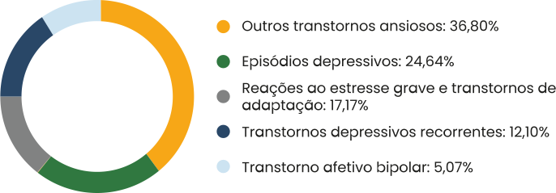

TÓPICO 2
O PROCESSO DE TRABALHO E SAÚDE-DOENÇA DOS TRABALHADORES DA APS
TÓPICO 2
O PROCESSO DE TRABALHO E SAÚDE-DOENÇA DOS TRABALHADORES DA APS
Ao considerar o principal grupo de adoecimento, transtornos mentais e comportamentais, que também é o grupo correspondente ao maior número de dias de afastamento do trabalho, temos como principais doenças apresentadas (DISTRITO FEDERAL, 2020):
